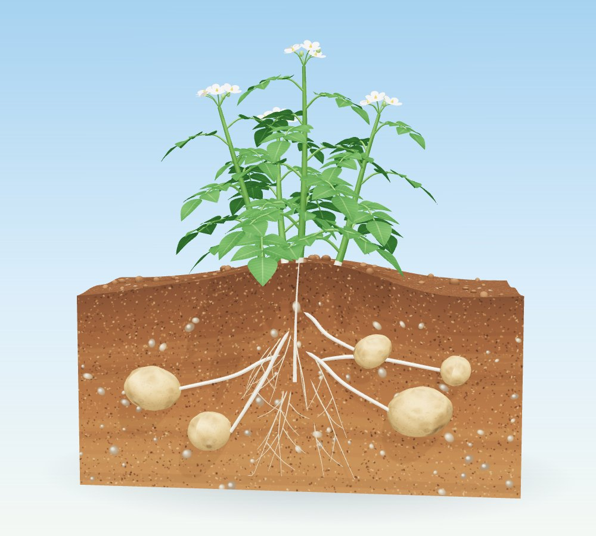

식물 잎의 엽록체에서 광합성으로 만들어진 포도당은 녹말로 바뀌어 저장돼요. 녹말은 물에 잘 녹지 않아요. 그래서 물에 잘 녹는 설탕 형태로 바뀌어 밤에 을 통해 식물의 각 기관으로 운반돼요.
그림 ① 양분의 운반 (손가락으로 돌려 볼 수 있어요. 알갱이의 수와 크기는 정한 모형이에요)
우리가 먹는 감자, 고구마, 옥수수에 들어 있는 양분은 어떻게 만들어진 것일까요?

식물 잎의 엽록체에서 광합성으로 만들어진 포도당은 녹말로 바뀌어 저장돼요. 녹말은 물에 잘 녹지 않아요. 그래서 물에 잘 녹는 설탕 형태로 바뀌어 밤에 을 통해 식물의 각 기관으로 운반돼요.
운반된 양분은 먼저 두 가지로 쓰여요. 생명활동에 필요한 에너지를 얻기 위해 호흡에 쓰이거나, 몸을 구성하는 성분이 되어 생장하는 데 이용돼요. 앞 시간에 배운 호흡이 여기에서 이어져요.
여러 가지 생명활동에 이용하고 남은 양분은 열매, 줄기, 뿌리, 씨 등에 포도당, 설탕, 녹말, 단백질, 지방 등 다양한 형태로 저장돼요.
식물에 저장된 양분은 사람을 비롯한 동물의 먹이가 되기도 해요. 그래서 광합성 결과 만들어진 산물은 다양한 생물의 생명활동에 꼭 필요한 에너지원이에요. 광합성 결과 발생한 산소도 식물뿐 아니라 여러 생물의 호흡에 이용돼요.
· 포도당 → 녹말(잎에 저장) → 설탕(밤에 체관으로 운반) → 각 기관
· 호흡으로 에너지를 얻거나, 몸의 성분이 되어 생장에 이용한다.
· 남은 양분은 열매, 줄기, 뿌리, 씨 등에 다양한 형태로 저장한다.
퀴즈 ①, ②를 모두 풀어 보세요.